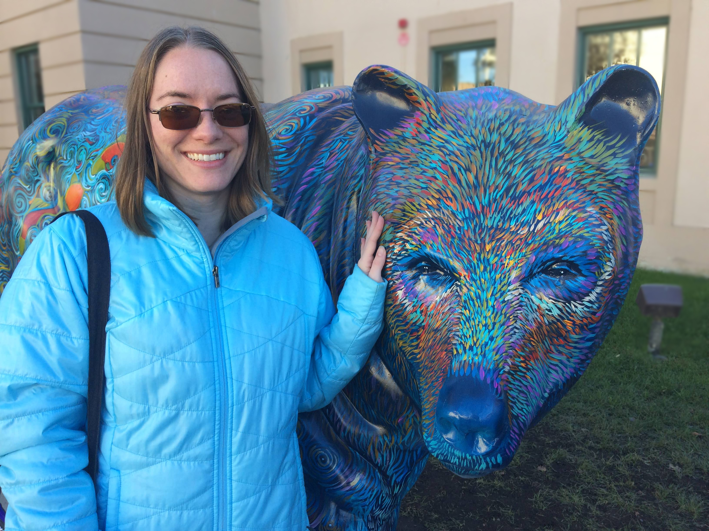
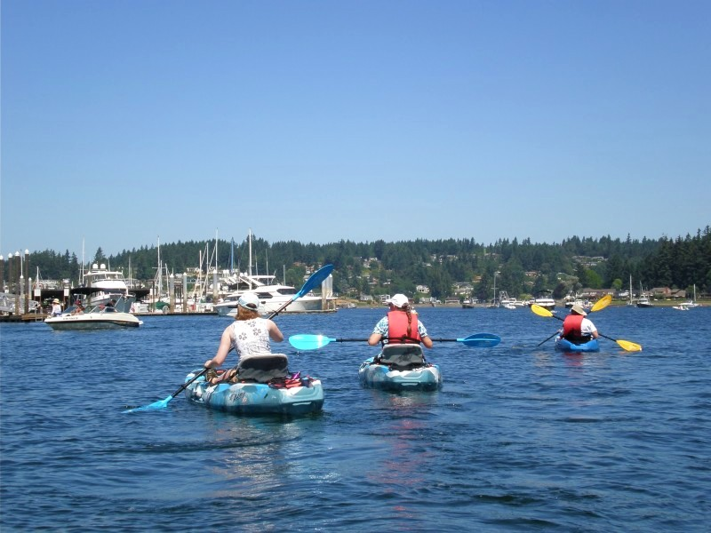

About Me
Hi, I’m Lisa Jacobson, just your average traveler with an above-average obsession with planning. My goal with this blog is to share my trip itineraries and tips to hopefully help make your own travel feel a little more organized and stress-free! I grew up in Tualatin, Oregon (USA) and currently live and work in the greater Seattle area in Washington state. I have a full-time job working in student services at a community college, supporting international students studying in the U.S. and helping Americans study abroad. Sometimes I’m lucky enough to have my work send me overseas for study abroad program site visits or to recruit international students. When I’m not too busy working I like to squeeze in at least one international vacation each year. On any personality quiz I take I always score off the charts for my tendency to be organized, strategic, and prepared. Spontaneous adventurer I am not, but that’s okay – I like my trips to be well thought-out and as chaos-free as possible to get the most out of my vacations and work travel. Being the planner that I am, you’d better believe that I make a detailed itinerary for each work and personal trip I go on. That’s what this blog is all about! I’ll share with you suggested tourist attractions, daily itineraries, and other recommendations for the main cities and countries that I’ve been to; just take what you like and leave what you don’t for your own adventures! Happy travel planning! ~ Lisa
About this Blog
As you go through my blog entries and sample itineraries, here’s a little bit about what to expect: I am not the most adventurous or frugal traveler out there. I certainly admire people who backpack through Europe or travel around the globe on a shoestring budget, but that’s not my travel style. Adventure to me might be renting a sea kayak for a few hours to paddle around the Puget Sound,  or trying a few new foods at a street market in Taiwan. I am definitely not an adrenaline junkie 😊 so if that’s the type of trip you’re looking for, please take my itineraries as a starting point but customize the daily activities to suit your passions. I tend to book mid-range hotels, and don’t mind spending money on experiences or visits to sites to see what interests me in a particular city. Some of the things I love to do and see when I travel: museums (especially art and history/ethnographic focused ones); churches, temples, and other worship sites with stunning architecture; top must-see tourist monuments like the Eiffel Tower or the Great Wall of China; castles, palaces, and other buildings of historical and/or current significance; and beaches, parks, and other places with great natural beauty to enjoy. You’ll get my suggestions for top sights to see in each city, but again don’t hesitate to customize your own trip plans based on your personal interests, likes, and dislikes. Remember when I said that I was an introvert? Yeah, well that means I’m also not a big fan of nightclubs or bars or staying out late in general, so I’m sorry (not sorry) to say that I won’t be giving you any recommendations for nightlife or that sort of thing. You’re on your own to plan that part of your trip! Last blog-related confession – I’m a special type of quasi-vegetarian where I don’t eat mammals (you know, the animals with four legs that give birth to live young). The only reason I’m telling you this is to provide context for my restaurant recommendations. Let’s just say you won’t be getting advice about the best steak place from me 😊 Each traveler has their quirks, so hopefully this helps you know what to expect and how you might need to modify my itineraries for your own style of travel. That said, I hope you find this blog to be helpful for you in planning your own adventures around the world!